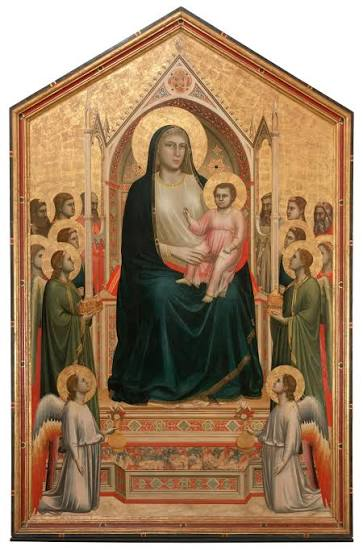

Madonna col bambino in trono
Ambito senese, secondo quarto del XIV secolo
Tavola centinata con fondo oro punzonato, probabile scomparto centrale di un polittico smembrato.
- Tipologia
- dipinto
- Luogo
- Siena
- Materia
- Tempera e oro su tavola
- misure
- cm 92 × 58
- Stato di conservazione
- discreto